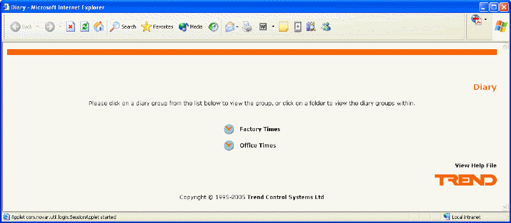

Het Diary Client Display maakt het mogelijk om de bezettingstijden van de controller te bekijken, en aan te passen. Uitzonderingen op de normale werktijden kunnen worden opgezet, en bewerkt indien gewenst.
See Also